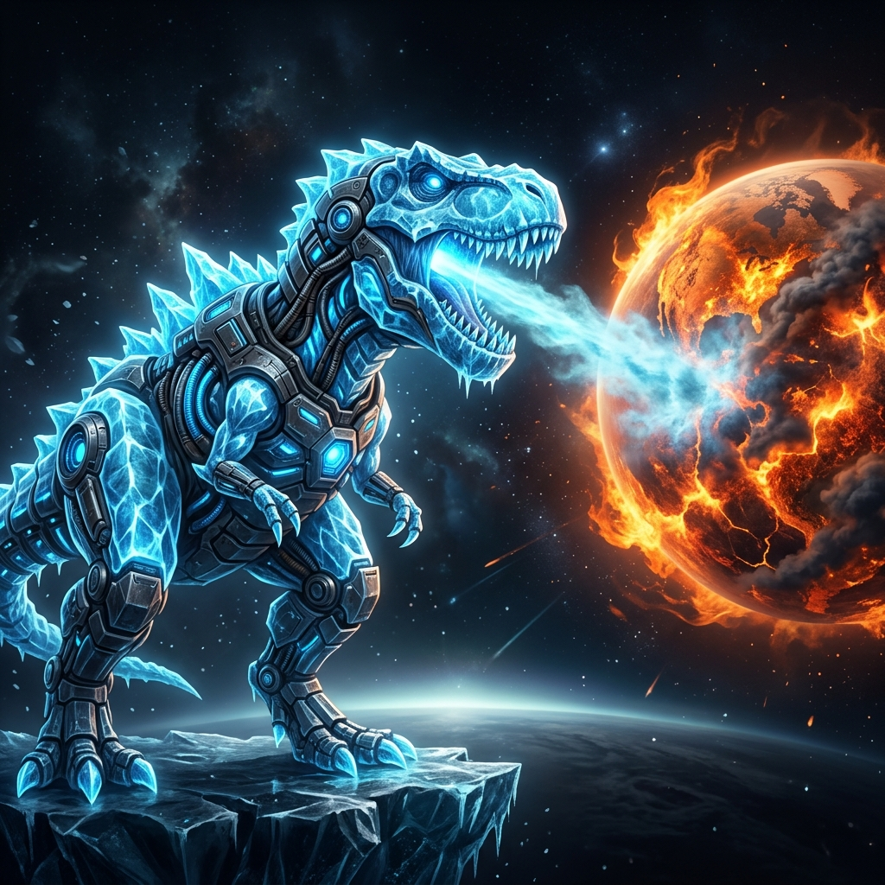

지구 온난화로 사상 초유의 무더위가 찾아온 현대 사회, 고대 남극 빙하 깊은 곳에서 깨어난 궁극의 빙하 포식자 '아이스 티라노'의 웅장한 진화 여정을 공개합니다.

야생의 최강 포식자에서 세상을 냉각시키는 수호자가 되기까지, 티라노사우르스의 전설적인 시대별 진화 과정입니다.
강력한 턱과 가공할 근력으로 지구 육상을 지배하던 전형적인 최강의 육식공룡 시절입니다. 훗날 남극 깊은 곳으로 이동하여 빙하기 봉인을 맞이하게 됩니다.
남극 빙하 밑에서 수천만 년 동안 혹독한 동결 수면 상태에 빠져들며, 신체 세포 전체가 남극의 극저온 얼음 코어 에너지를 서서히 동화·흡수하기 시작했습니다.
온난화로 인한 빙하 해빙 과정에서 스스로 눈을 떴습니다. 뜨거워지는 대지를 체감하고, 지구 환경을 복구하기 위해 강력한 냉각의 숨결을 뿜는 방식을 터득합니다.
인류 과학자들의 사이버네틱 서포트로 차가운 메탈 장갑과 동결 엔진 리액터를 등판에 이식받아 자가 온도 조절 능력이 비약적으로 극대화된 궁극의 세이버 진화 형태입니다.
티라노의 냉각 코어 출력을 테스트하여 붉게 타오르는 위험 단계의 지구 온도를 내려보세요!
세상을 냉각하고 환경을 보존하기 위해 티라노사우루스의 전신에 적용된 핵심 기술 및 특수 장비입니다.
가슴 중앙에 장착된 초저온 핵융합 냉각 리액터로, 주변 열에너지를 빠르게 정화하여 영하 180도 수준의 극저온 냉기를 끊임없이 생산합니다.
외부의 뜨거운 마그마나 폭염 공격으로부터 내부 장기를 완벽히 단열하며, 실시간 서리 실드를 펼쳐 스스로 얼지 않도록 몸을 감쌉니다.
꼬리와 등판의 플레이트를 따라 열 배출 통로를 구성하여 효율적으로 지표 온도를 정화 및 급속 냉각시키는 순환식 기화 통로입니다.
뜨거운 세상을 냉각하고 평화를 유지하는 지구 기후 안정 연대에 가입하세요.